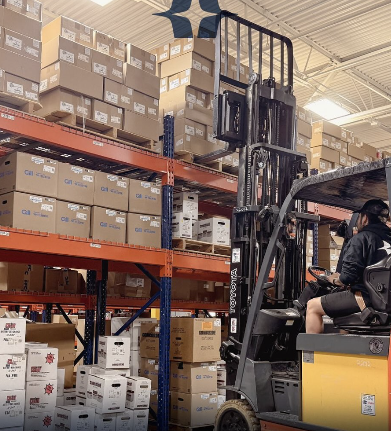

Summer intern · July 2024 – August 2025
Southern Cross Aviation
Fort Lauderdale, Florida · Aviation parts procurement, shipping and record integrity.
Procurement and logistics
I coordinated procurement and shipment of thousands of aviation parts supporting engineering requests, client orders and dispatch. The work involved aligning part availability with order requirements and maintaining accurate records through the fulfillment process.
Inventory and record integrity
I reconciled barcode inventory and processed vendor and customer invoices in accounting software. Maintaining a reliable relationship between physical stock, orders and transaction records is important in a parts operation where accuracy and timely availability affect downstream work.

What I took from the experience
The internship gave me a practical view of the supply chain surrounding engineered hardware, from procurement through dispatch. It reinforced the value of accurate part identification, documentation, coordination and communication.